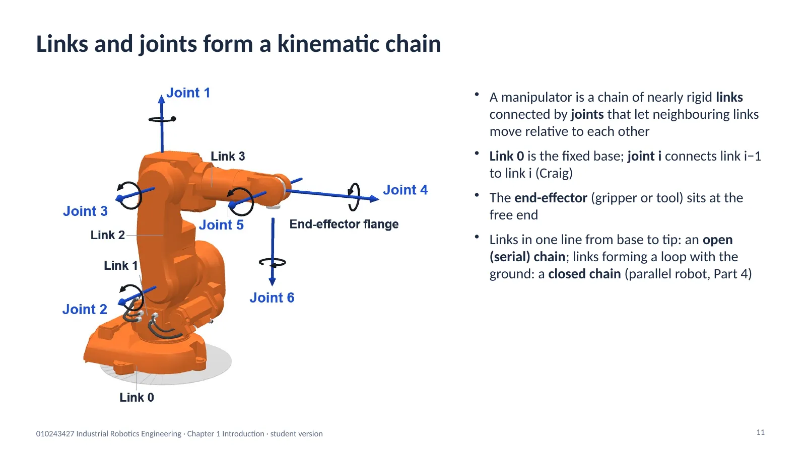
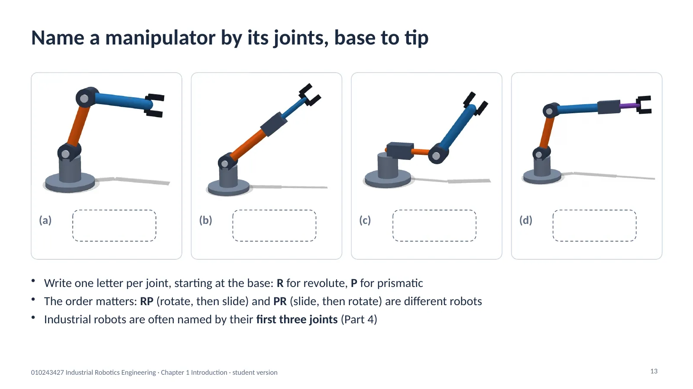
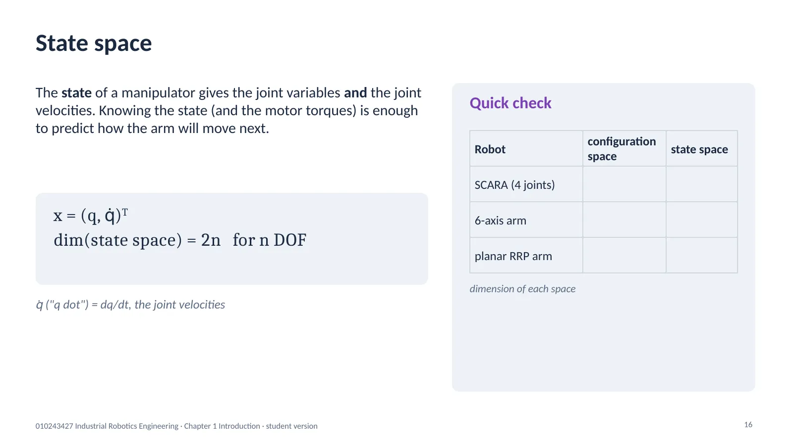
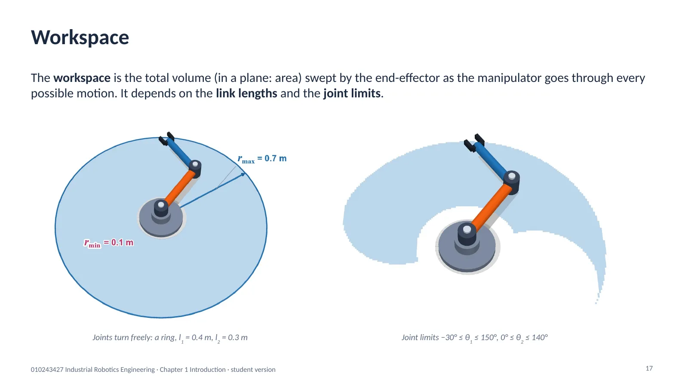
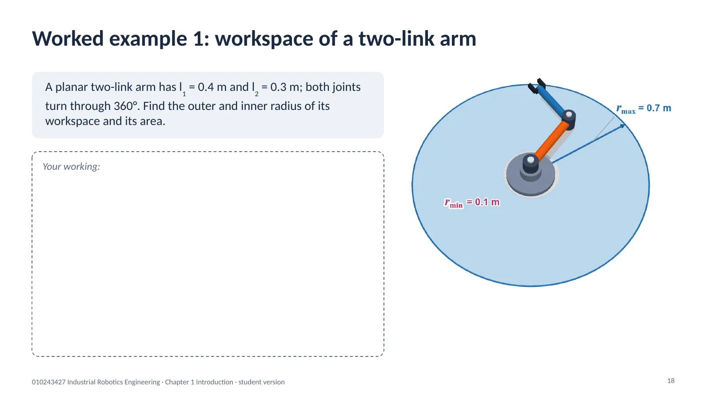
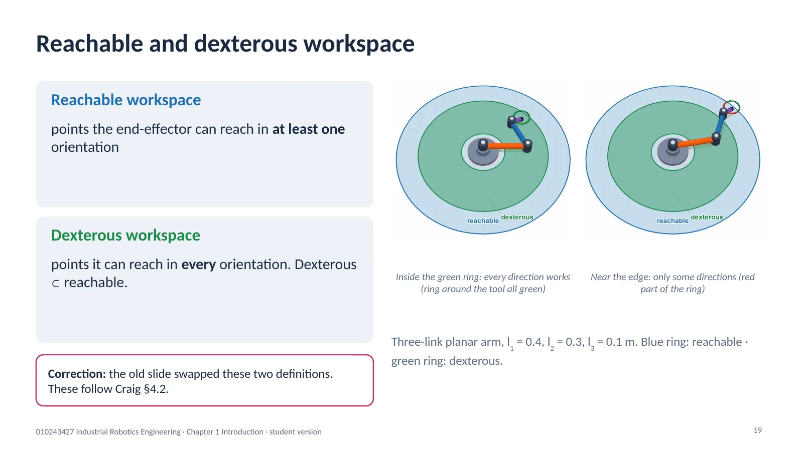
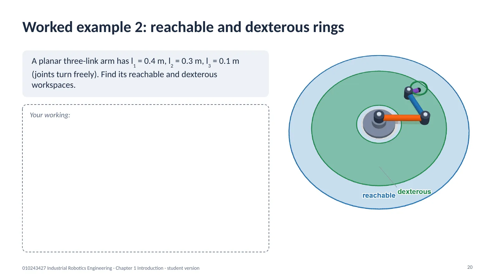
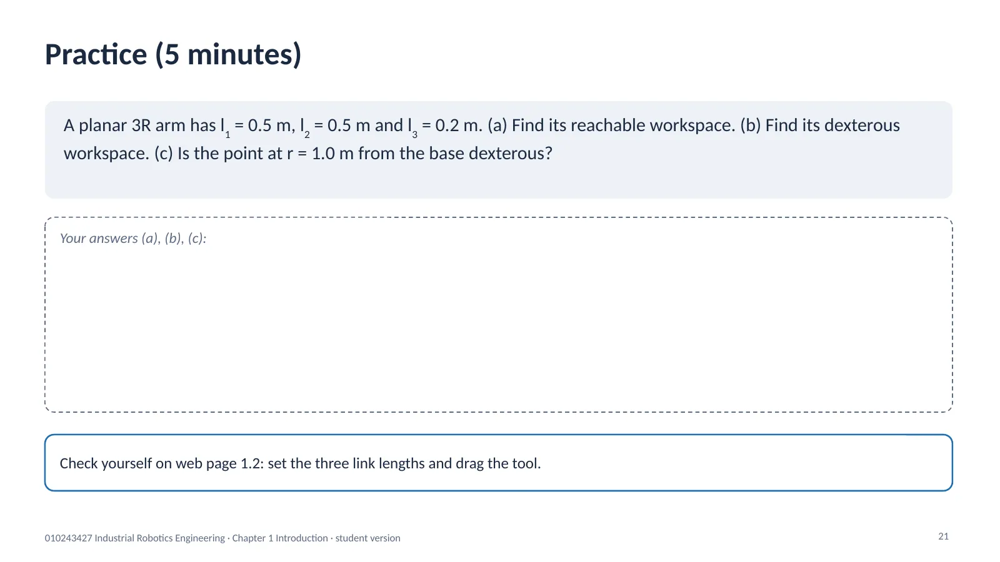

ก่อนจะคำนวณอะไรได้ ต้องบรรยายหุ่นยนต์ด้วยภาษาเดียวกันก่อน: ก้านต่อ ข้อต่อ ตัวแปรข้อต่อ องศาอิสระ และปริภูมิทำงาน หน้านี้ครอบคลุมสไลด์หน้า 10–22 มี เครื่องมือ 1 ชิ้น (A) และ 5 โจทย์ การนับก้านและข้อต่อใช้แบบของ Craig ซึ่งเป็นตำราหลักของวิชา
Before anything can be computed, the robot has to be described in one language: links, joints, joint variables, degrees of freedom and the workspace. This page covers slides pp. 10–22. It has one tool (A) and 5 problems. Links and joints are numbered as in Craig, the course's main textbook.
ข้อต่อเลื่อน (กล่อง) เลื่อนไปตามแนวของก้านก่อนหน้า ลองสร้าง RR, RP และ PR แล้วเทียบว่าปลายแขนเคลื่อนที่ต่างกันอย่างไร
A prismatic joint (box) slides along the previous link. Build RR, RP and PR and compare how the tip can move.



ปริภูมิทำงาน คือทุกจุดที่ปลายแขนไปถึงได้เมื่อข้อต่อเคลื่อนที่ครบทุกค่า ขึ้นกับสองอย่าง: ความยาวก้านต่อ และ ขีดจำกัดของข้อต่อ ในโจทย์ข้อ 3 ลองกด "กวาด" ให้แขนวาดปริภูมิทำงานของตัวเอง แล้วเลื่อนขีดจำกัดของ \(\theta_1\) และ \(\theta_2\) ดูพื้นที่ที่หายไป
The workspace is every point the tool can reach as the joints go through all their values. It depends on two things: the link lengths and the joint limits. In problem 3 press "Sweep" to let the arm draw its own workspace, then move the limits of \(\theta_1\) and \(\theta_2\) and watch the area that disappears.


นิยามตาม Craig หัวข้อ 4.2: ไปถึงได้ (reachable) = จุดที่ปลายแขนไปถึงได้ อย่างน้อยหนึ่งทิศ · คล่องแคล่ว (dexterous) = จุดที่ไปถึงได้ ทุกทิศ ดังนั้นแบบคล่องแคล่วอยู่ในแบบไปถึงได้เสมอ
Definitions from Craig §4.2: reachable = points the tool can reach in at least one orientation · dexterous = points it can reach in every orientation. So the dexterous workspace always lies inside the reachable one.

